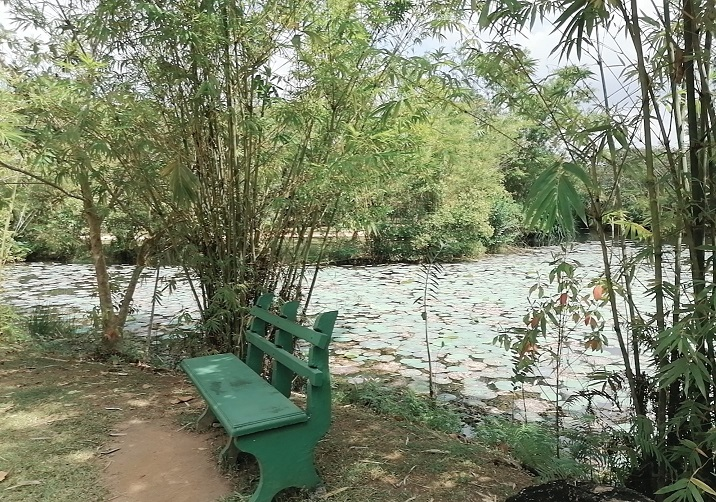
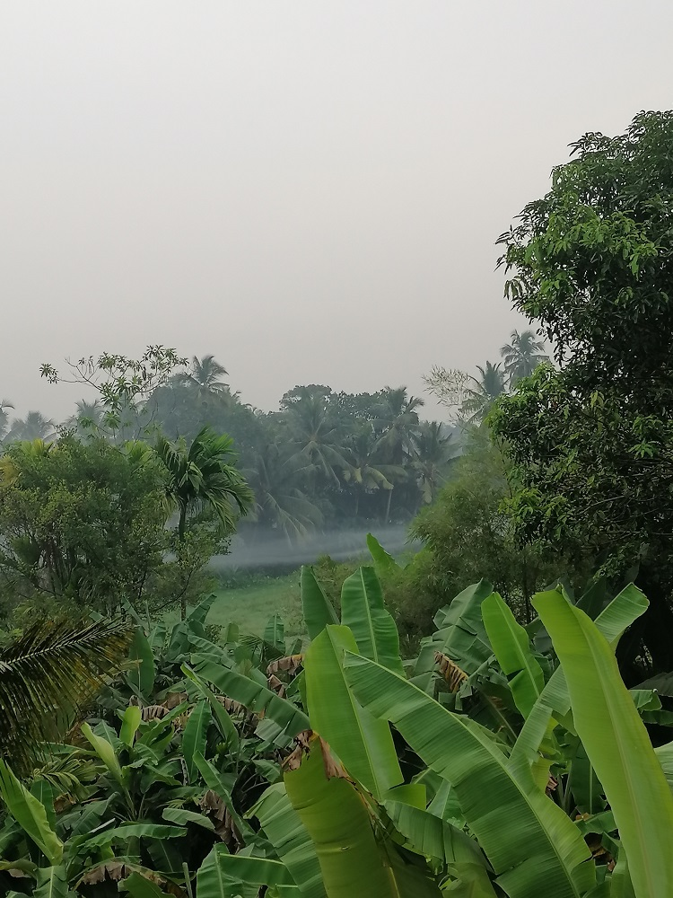

Urban Development Impact on Wildlife
.jpg)
Introduction:
Urban development poses significant challenges for local wildlife, leading to habitat loss, fragmentation, and degradation. As the city expands, natural habitats are often replaced by buildings, roads, and infrastructure, forcing wildlife to adapt to increasingly fragmented and disturbed environments.
Solutions to Reduce:
Investing in the creation and maintenance of green spaces such as parks, gardens, and nature reserves within urban areas provides essential habitat for wildlife and promotes biodiversity conservation.
Designing urban landscapes with wildlife in mind can help minimize conflicts between humans and wildlife.
Implementing habitat restoration and enhancement projects in urban areas can help recreate natural habitats and improve biodiversity.
Engaging the community in wildlife conservation efforts through education, outreach, and citizen science initiatives can foster a sense of stewardship and promote coexistence between humans and wildlife.

Benefits:
Protecting and preserving wildlife in urban areas offers numerous benefits for both humans and the environment.
Maintaining healthy ecosystems supports essential ecosystem services such as pollination, pest control, and water purification, which are vital for human well-being and food security.
Additionally, preserving urban wildlife enhances the aesthetic value of the city, promotes ecotourism and nature-based recreation, and contributes to the overall resilience and sustainability of urban communities.
By implementing these solutions and raising awareness about the importance of wildlife conservation in urban areas, can create a more harmonious relationship between humans and wildlife and ensure the long-term survival of diverse plant and animal species in the urban environment.
